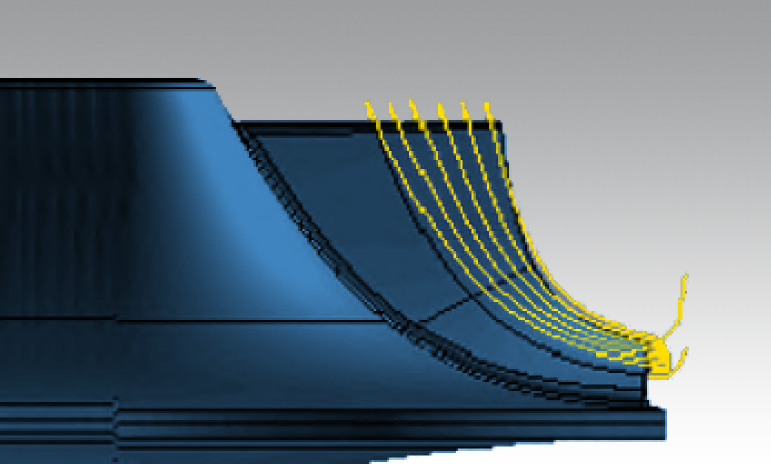
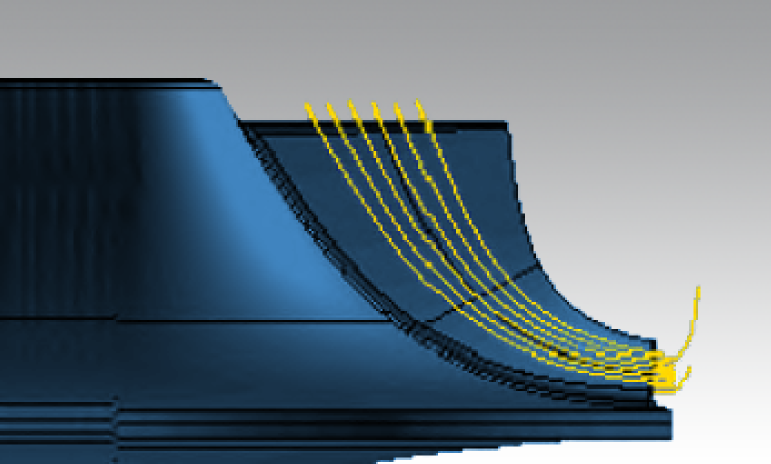
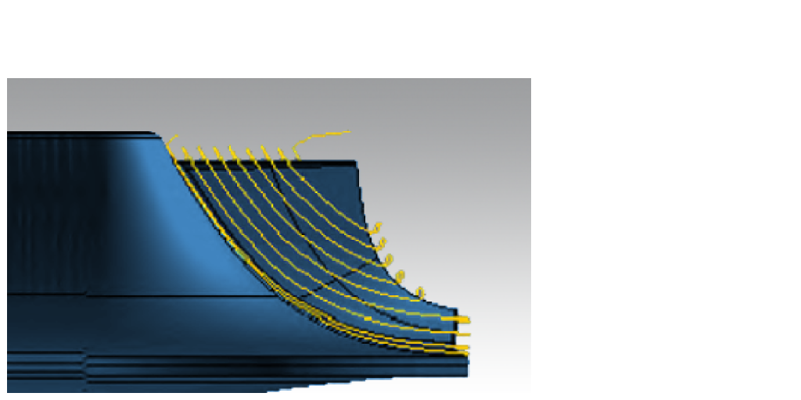

Parameters
Machining area in the axial direction
The top and bottom limits for the axial machining area are defined differently according to the selected infeed strategy (see the strategy panel).
Infeed strategy: Flow
The top and bottom limits are defined using iso parameters:
-
The maximum permissible value for the top limit’s iso parameter = 1.
-
The minimum permissible value for the bottom limit’s iso parameter = 0.
Partial machining jobs can be performed by correspondingly selecting the iso parameters.
 Complete machining |

Iso parameter (top limit) = 1. Iso parameter (bottom limit) > 0. |

Iso parameter (top limit) < 1. Iso parameter (bottom limit) > 0. |
The machining job always start with an open spiral.
The machining job end with:
-
Closed spiral if the iso parameter for the lower limit is 0.
-
Open spiral if the iso parameter for the lower limit does not equal 0.
It is possible to force an open spiral on the lower limit using a very small value (approx. machining tolerance).
Consecutive machining jobs will fit together ideally if
-
the hub allowance is not changed in a series of partial machining,
-
the tool diameter is not changed.
In the case of consecutive machining jobs, smooth lead-in/fade-out ensures that different deflections and tool tolerances do not appear on the blade surfaces.
Additional overlapping paths
-
may be specified above (upper limit < 1) and below (lower limit > 0),
-
extend the machining area by the user-defined number of paths and
-
continuously decrease/increase the distance from/to the blade surfaces.
Infeed strategy: Parallel to the hub
Top limit
Defines the Entry start height for partial machining.
When Manual hub offset is not defined: The blade is machined completely.
Manual hub offset: The value should correspond to the hub allowance from the previous machining job (point milling).
|
Manual hub offset not defined |

Manual hub offset defined |
Consecutive machining jobs will fit together ideally if
-
the tool diameter is not changed,
-
the entered value corresponds to the hub allowance of the previous machining job.
In the case of consecutive machining jobs, smooth lead-in/fade-out ensures that different deflections and tool tolerances do not appear on the blade surfaces.
Additional overlapping paths above (manual limit defined):
-
extend the machining region by user-defined number of paths
-
continuously reduce the distance to the blade surface from a user-defined value.
Lead out paths below (manual limit defined)
-
reduce the cutting load for the defined number of final paths before the hub allowance (no extension below the offset to bottom surfaces),
-
increase the distance relative to the blade surface to a user-defined distance.
Technology: Edge behavior
Leading edge feedrate / Trailing edge feedrate
You can define a local feedrate for both edges to prevent the rotary axes from acceleration too quickly around these edges.
Technology: Stepwise finishing with blending path
Divides the entire finishing toolpath into short steps/areas, with a transition toolpath that reduces the material thickness directly before the finishing path. Blade finishing can therefore be applied to a stronger/thicker pre-machined component, reducing/avoiding deformation and potentially reducing the need for semi-finishing.
Finishing
Contained finish paths: Number of finishing toolpaths for each step.
The Finishing direction makes it possible to carry out each finishing step Bottom to top or Top to bottom.
(1) Local finishing toolpaths, (2) linking movement to the finishing toolpaths, (3) blending path, (4) linking movement to the blending path, (5) global finishing toolpaths.
(A) Machining Top to bottom, (B) machining Bottom to top.
Blending path
Additional allowance: (1) Remaining material thickness after the transition toolpath, which is removed during subsequent finishing.
Offset to finishing step: (2) Distance of the transition toolpath before the finishing step.
Technology: Final paths
If the pre-machining job used a larger tool, this may mean that more material is left in the transition radius between the blade and hub surface.